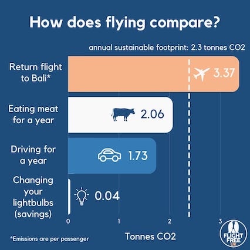
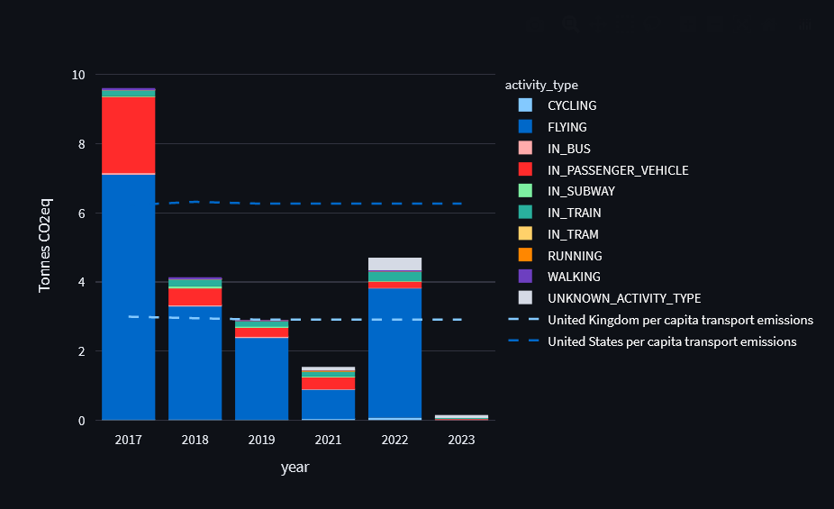
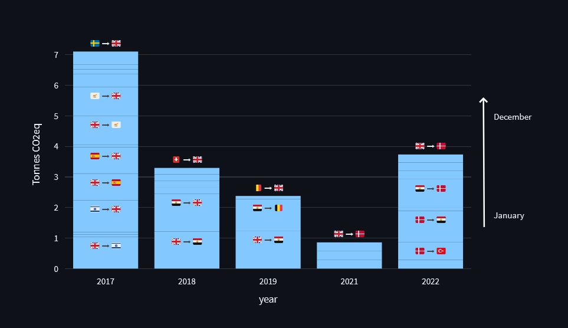

>>> Dashboard to analyse your own Google Timeline data <<<
A few weeks ago I came across this image and found the relative impact of flying versus avoiding meat striking. I’ve followed a vegan diet for the past 5 years, and try my best to take the train when travelling across europe, so I have some awareness of my personal emissions. I think sometimes it’s easy for these numbers to get lost in the wider conversation about climate change.

This image got me thinking about trying to work out how much of my own transport emissions were coming from flights, and how that stacks up against the average person.
Being a lazy programmer at heart, I decided to try and use Google Timeline to gather data on my past flights, rather than manually recording my flights from the past n years.
Google Timeline tracks your phone location, storing start and end locations for journeys between any two locations. Based on this, it estimates your method of transport with a confidence score (presumably using a machine learning model) and also calculates the distance.
When we know the distance and method of transport of a journey, we can apply some emissions factors to calculate the grams of CO2 equivalent produced for that journey. For our purposes, I used figures sourced by Oliver Corradi in his general post about climate change1.
If you have Google Timeline enabled in the Google Maps app, you can download your data from Google Takeout. I decided to create a dashboard to visualize my own data, and make it available so that others can do the same: https://transport-co2-emissions.streamlit.app/
My transport emissions were highest in 2017, where I took 13 flights, totalling around 25,000km. This puts my total transport emissions at more than 3x the UK and almost 2x the US average. In this year flying was responsible for 75% of my transport emissions.

Looking at the breakdown of individual flights, all of them are short to medium haul in the last few years, with the furthest flight being from the UK to Egypt.

Although my flight emissions were higher than the UK average, this still puts me below the 1% of the world’s most frequent flyers, who travel around 56,000km per year on average2. This group are responsible for 50% of global aviation emissions, which shows the highly non-uniform distribution of flying in the world population.
Flying contributes 2.5% of total global carbon emissions - which is smaller than other sectors such as animal livestock (5.8%) and road transport (11.9%)3 - but the difference is that the impact is being caused by a smaller subset of the population. In wealthy subsets of the population, this generally means that flying will take up a larger proportion of an individual’s total emissions.
Worryingly, the path towards decarbonization for aviation seems highly flawed. In the UK at least, the government seem to be mainly relying on a combination of sustainable aviation fuels (SAFs) and carbon offsets to reach net zero for aviation4.
Just weeks ago the Royal Society published a report5 into the viability of SAFs in covering the current level of flying in the UK aviation industry, with two main conclusions:
- To use biofuels, half of all agricultural land in UK would need to be repurposed
- To use hydrogen, double the current renewable energy production level would be needed
Decarbonization of aviation becomes even more challenging when you consider the increased demand on the electricity grid from personal vehicle and home heating electrification, which in the UK is projected to contribute to a 15% increase in demand by 2035. This is on top of other increases in demand on the electricity grid driven by the pursuit of growth in other sectors of the economy.
Carbon offsets have their own fundamental problems - it has been shown that “more than 90% of carbon offsets by [the] biggest certifier are worthless”6
Based on these factors it seems unrealistic to expect that the aviation industry can continue to grow at its current rate, and become net zero by 2050.
Individual action - ie. choosing not to fly - feels important in the context of aviation, in an industry that seems unwilling to embrace the reality of the climate crisis. Whilst I think we desperately need huge changes to our public institutions, the engagement and careful thought that comes with individual lifestyle changes feels important to me as part of building greater consciousness of change. I think Rebecca Solnit captures this best:
Individual choices do add up […]. That vegan options are available at a lot of fast-food chains is because enough consumers have created a profitable market for them. We do influence others through our visible choices. Ideas spread, values spread, habits spread; we are social animals and both good and bad behaviors are contagious.7
Reflecting on these ideas, I think there is a more general point here about when “enough is enough”. Personally, I’ve flown to many interesting places around the world already. Will it really make much of a difference to my life flying to one more, when weighed against the costs to everyone currently living, as well as future generations?
I’ve decided to take Flight Free UK’s challenge of a flight free year for 2023. Making this decision clearly isn’t possible for people who absolutely have to fly for work, or those who need to visit close family who live in far away countries. I fully recognize the priviledge I have to be able to make this descision. Even so, I hope some of you might relate to my feelings, and consider going flight free for 2023 too.